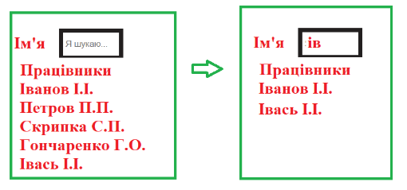

-
Task_1 (На перевірку)
Динамічний пошук. Є список працівників і поле пошуку. При введенні відображаються усі, які містять вказаний фрагмент.
 -
Task_2
На сторінці міститься певна кількість кнопок і інпутів. Підраховувати загальну кількість кліків окремо на кнопках і окремо на інпутах.
-
Task_3
На формі вводять 7 числових значень (вік, зріст, вага, заробітна плата, стаж, номер відділу, порядковий номер). Додати подію обробки події click на форму і якщо клік на внутрішньому input, то автоматично замінювати значення його на 0. Використати делегування